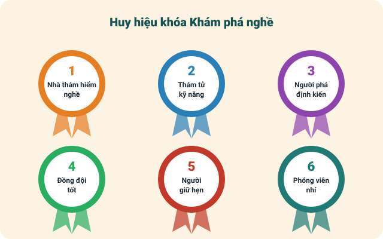
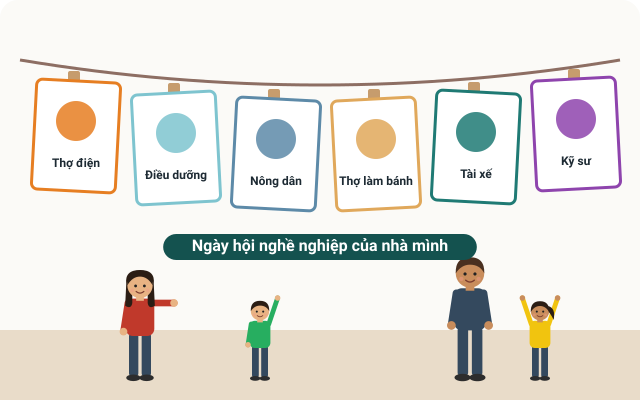
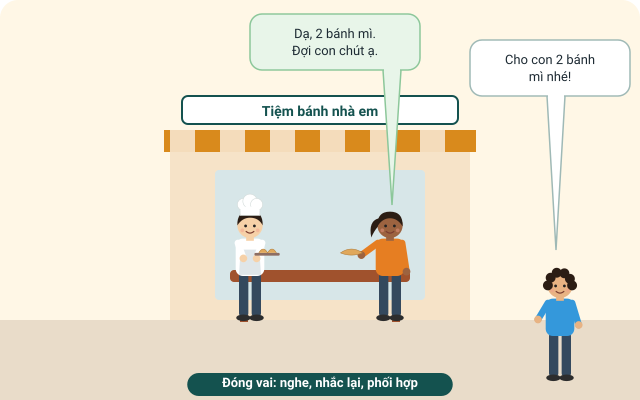

K7 · Tự học và phát triển nghề nghiệp › Bậc 1 Làm quen
Ôn tập: Ngày hội nghề nghiệp của nhà em
Dành cho người lớn. Đây là bài ôn tập cả khóa bằng cách dùng lại kiến thức, không đọc lại.
- Đọc bài: 15–20 phút. Ngày hội: 30–45 phút, có thể làm vào cuối tuần.
- Ở lớp: dùng được trong tiết Hoạt động trải nghiệm, hướng nghiệp. Mỗi nhóm một góc nghề.
- Chuẩn bị: các Thẻ nghề, áp phích từ Bài 4, dây và kẹp để treo, Phiếu ôn tập cả khóa.
- Không biến Ngày hội thành buổi "chọn nghề". Mục tiêu là trẻ biết thêm nhiều nghề và tự tin kể lại.
1. Mục tiêu
- Dùng Thẻ nghề để kể về ít nhất 3 nghề.
- Trả lời 6 câu kiểm chéo, mỗi câu ứng với một bài của khóa.
2. Khởi động truy xuất
- Phỏng vấn gồm 4 bước nào?
- Kể 2 quy tắc an toàn khi phỏng vấn.
Đáp án
- Chuẩn bị, hỏi và nghe, cảm ơn, kể lại.
- Người quen; có người lớn đi cùng; xin phép trước khi chụp ảnh, ghi âm; không đăng mạng khi chưa được đồng ý.
Xem lại: Phỏng vấn người làm nghề.
3. Giải thích
Khóa học có 6 bài, nối với nhau bằng một sợi chỉ: Thẻ nghề. Sơ đồ dưới đây tóm tắt cả khóa. Mỗi ô là một bài. Bấm vào để xem lại.
Cả khóa trong một sơ đồ
Vì sao ôn bằng Ngày hội? Khi tự nhớ lại và dùng kiến thức, em nhớ lâu hơn đọc lại. Ngày hội bắt em dùng cả 6 bài cùng lúc: làm thẻ, kể nghề, chia việc, giữ giờ.

Ngày hội có 5 bước. Mỗi bước dùng lại một bài:
Kế hoạch Ngày hội 5 bước
- Gom Thẻ nghềKiểm tra đủ 5 ô (Bài 1, 2, 6).
- Lập Bảng nhiệm vụAi treo thẻ, ai dẫn, ai giữ giờ (Bài 4).
- Nhận việc, hẹn giờNhắc lại việc, ghi giờ bắt đầu (Bài 5).
- Trưng bày và kểMỗi người kể 2 phút (Bài 6).
- Đóng vaiChơi một nghề, đổi vai nam nữ (Bài 2, 3).
4. Ví dụ tại nơi làm việc Việt Nam
Tình huống giả định. Nhà bé Na tổ chức Ngày hội nghề nghiệp vào chiều Chủ nhật. Na (lớp 3) có 4 Thẻ nghề. Anh Tú (lớp 7) có 3 thẻ và 1 bài phỏng vấn.
Cả nhà lập Bảng nhiệm vụ: Na treo thẻ lên dây. Anh Tú dẫn chương trình và giữ giờ. Bố kể về nghề của bố. Mẹ chuẩn bị góc đóng vai.

Mỗi người kể 2 phút theo khung ở Bài 6. Sau đó cả nhà chơi đóng vai "Tiệm bánh nhà em". Na làm thợ làm bánh. Anh Tú bán hàng: anh nghe khách gọi và nhắc lại đơn. Bố làm khách. Lượt sau, mọi người đổi vai.

Vì sao cách này tốt: cả nhà dùng lại mọi bài: thẻ (Bài 1, 2), đổi vai (Bài 3), bảng (Bài 4), giữ giờ (Bài 5), kể lại (Bài 6). Không ai phải đọc lại bài cũ.
5. Thực hành
Phần A. Kiểm chéo cả khóa. Trả lời bằng lời, không xem lại bài. Câu nào chưa nhớ, đánh dấu và mở lại bài đó sau.
| Câu hỏi | Nếu chưa nhớ, xem lại |
|---|---|
| 1. Thẻ nghề có 5 ô nào? | Bài 1 |
| 2. Kể 3 kỹ năng nghề nào cũng cần. | Bài 2 |
| 3. Đổi câu "Con trai không làm điều dưỡng" thành câu hỏi. | Bài 3 |
| 4. Bảng nhiệm vụ có 3 cột nào? | Bài 4 |
| 5. Câu báo sớm cần nói rõ 2 điều gì? | Bài 5 |
| 6. Cho một ví dụ câu hỏi mở khi phỏng vấn. | Bài 6 |
Đáp án kiểm chéo
- Tên nghề, làm gì, ở đâu, dùng gì, cần kỹ năng gì.
- Lắng nghe, nói rõ, gỡ khó, làm cùng nhau, giữ hẹn, dùng công nghệ.
- "Điều dưỡng cần kỹ năng gì?"
- Ai – Làm gì – Xong khi nào.
- Phần nào có thể chậm, và mình cần gì.
- Ví dụ: "Điều gì làm cô thích nghề này?"
Phần B. Tổ chức Ngày hội theo 5 bước ở Sơ đồ 2.
Gợi ý cho nhà ít người
Hai người cũng làm được. Mỗi người kể 2 nghề. Đóng vai bằng đồ chơi hoặc đồ dùng trong bếp.
6. Tự kiểm tra
Chọn đáp án. Mỗi lựa chọn đều có giải thích.
Câu 1. (Bài 1) Với nghề thợ may, ô "Dùng gì?" ghi gì?
-
Đúng. Đúng. Ô "Dùng gì?" ghi đồ dùng và máy móc.
-
Chưa đúng. Đây là việc làm, hợp với ô "Làm gì?".
-
Chưa đúng. Đây là nơi làm việc, hợp với ô "Ở đâu?".
Câu 2. (Bài 2) Thợ sửa xe hẹn khách 5 giờ lấy xe. Thợ cần kỹ năng nào để xong đúng hẹn?
-
Đúng. Đúng. Đây là một trong 6 kỹ năng nghề nào cũng cần.
-
Chưa đúng. Vẽ đẹp không giúp sửa xe xong đúng giờ.
-
Chưa đúng. Kỹ năng này không liên quan đến việc giữ hẹn.
Câu 3. (Bài 3) Bạn em nói: "Con trai không làm điều dưỡng." Câu nào giúp mở rộng suy nghĩ?
-
Đúng. Đúng. Câu hỏi về kỹ năng mở nghề cho mọi người.
-
Chưa đúng. Câu này lặp lại định kiến giới về nghề.
-
Chưa đúng. Cãi nhau không giúp bạn hiểu thêm. Hãy hỏi về kỹ năng.
Câu 4. (Bài 4 và 5) Nhóm làm áp phích, hạn thứ Sáu. Thứ Tư, phần của em có thể chậm. Em làm gì?
-
Đúng. Đúng. Báo sớm thì nhóm còn kịp giúp, cả nhóm vẫn xong đúng hẹn.
-
Chưa đúng. Nếu không kịp, cả nhóm sẽ biết quá muộn.
-
Chưa đúng. Phần việc đã nhận cần được làm xong hoặc báo để nhóm sắp xếp lại.
Câu 5. (Bài 6) Khi phỏng vấn, câu nào giúp người làm nghề kể nhiều hơn?
-
Đúng. Đúng. Câu hỏi "vì sao" là câu hỏi mở, mời người kia giải thích.
-
Chưa đúng. Câu này chỉ cần trả lời có hoặc không.
-
Chưa đúng. Câu đóng, thường chỉ được trả lời ngắn.
7. Phản tư
Người lớn hỏi, em trả lời bằng lời. Site không lưu gì.
- Trong 6 bài, bài nào em dùng được nhiều nhất ở trường? Dùng thế nào?
- Nghề nào em muốn tìm hiểu thêm? Em sẽ hỏi ai?
8. Áp dụng thật
Ôn giãn cách. Sau Ngày hội, làm lại Phần A và phần Tự kiểm tra theo lịch dưới đây. Mỗi lần chỉ 5 phút. Bấm "Đánh dấu đã học" ở cuối bài để site gợi ý ngày và tạo file nhắc lịch.
| Khi nào | Làm gì |
|---|---|
| Sau 1 ngày | Kiểm chéo 6 câu, không xem lại |
| Sau 3 ngày | Làm lại Tự kiểm tra của bài này |
| Sau 7 ngày | Kể lại 1 nghề trong 2 phút |
| Sau 1 tháng | Săn thêm 3 nghề mới, làm thẻ đủ 5 ô |
Đi tiếp. Khi lên THPT, em có thể học lộ trình N2: Chuẩn bị đi làm. Nhiều bài ở đó phát triển từ khóa này: chia việc nhóm, nhận việc, kể ví dụ.
Thói quen, giá trị và phẩm chất được bàn ở daynentang.com. Học tiếng Anh ở tienganhcanban.com.
9. Siêu dữ liệu
| skill | K7 · Tự học và phát triển nghề nghiệp |
|---|---|
| level | Bậc 1 · Làm quen |
| group | N1 |
| framework_map | WEF: Curiosity and lifelong learning; CSfW: 1a Manage career and work life; 2b Connect and work with others; NACE: Career and Self-Development; Teamwork; LifeComp: L3 Managing learning; S3 Collaboration (chỉ dẫn chiếu) |
| updated | 2026-11-14 |
Hoàn thành bài
Đánh dấu đã học để site gợi ý lịch ôn sau 1, 3 và 7 ngày. Dữ liệu chỉ lưu trên máy của bạn.
Lịch ôn gợi ý: